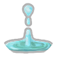
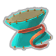
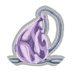
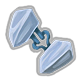
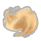
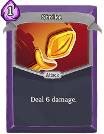
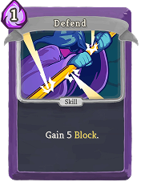
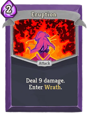
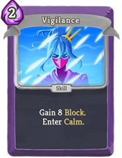

Pure Water
Start each combat with 2 Miracles.
A disciplined monk who shifts between calm and wrath to turn inner focus into explosive power.
Starting HP: 72
Starting Relic: Pure Water
Watcher Collection

Start each combat with 2 Miracles.

Start each combat with 1 Mantra.
Attacks give Dexterity; Skills give Strength.

Start each combat in Calm.

When you exit Calm, gain 6 Block.
Whenever you Scry, Scry 2 additional cards.
Start each combat with 3 Miracles.
Exit Calm to gain 1 additional Energy.

When you shuffle, Scry 3.
The Watcher begins with 4 Strikes, 4 Defends, Eruption, and Vigilance.



